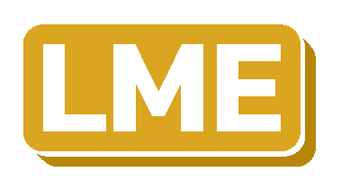

My Projects
A showcase of my technical projects spanning web development, cloud computing, and system administration. Each project demonstrates practical application of modern technologies and problem-solving approaches.
Grading Dino
(School Project)
Completed

A grade management web application developed as a BTS Cloud Computing group project. Built with Django 5.0 and Python 3.11, containerized with Docker, and secured with Argon2 password hashing. The system enables teachers to create classrooms, manage student grades, and write observations, while students can track their academic progress across multiple grading scales.
LME (School/Private Project) In Progress Company

A secure multi-tenant hosting platform built on Proxmox, with Laravel for the web front, Coolify for deployment and containerization, and Forgejo as the self-hosted Git server.
Azure Cloud Infrastructure
(School Project)
Completed

A hands-on lab on Azure Cloud Infrastructure covering VM connectivity methods (Bastion, SSH, Cloud Shell, VNet integration, Jump Host), DMZ-style web hosting with nginx, auto-shutdown configuration, and free-tier VM creation.
Azure AZ-104 — Identity, Governance & Compute
(School Project)
Completed
A hands-on Azure team project proving practical understanding of two AZ-104 Pluralsight courses — Manage Azure Identities and Governance, and Deploy and Manage Azure Compute Resources. The team deployed an Entra ID tenant, a management group / subscription / resource group hierarchy, and compute resources including a public VM Scale Set proxying to a private web container and App Service.
Server Virtualization Systems (School Project) Completed
A hands-on comparison of Proxmox VE and VMware ESXi covering VM deployment, cloning, snapshots, backups, live migration, and remote storage. Group specialization in High Availability — implementing automatic VM failover across hypervisor clusters.
NAS Server Setup & Configuration (School Project) Completed
A comprehensive documentation project covering the setup and configuration of a NAS server running TrueNAS Community Edition on an Intel SR2600URBRPR rack server, including hardware documentation, OS installation, network configuration, and file sharing setup.
Raspberry Pi Cluster
(School Project)
In Progress

A high-availability Raspberry Pi cluster built for the LGK Porte Ouverte — 5 Pi 4 nodes running K3s and Traefik, hosting a live demo website with automatic failover, load balancing, auto-scaling, and a real-time monitoring dashboard.
File & Storage Services (School Project) Completed
A comprehensive presentation on Windows Server File and Storage Services with a live demonstration of Distributed File System (DFS) implementation, including DFS Namespaces and Replication configuration.
Budget Planner (School Project) Completed
A budget management application built with Microsoft PowerApps featuring budget tracking, recurring costs, and monthly expenses with Power Automate integration for automatic monthly resets.
Portfolio (School Project) In Progress
A personal portfolio website showcasing my skills, projects, certificates, and professional experiences. Features multi-language support, responsive design, and glass morphism styling.
Portable Computing (School Project) Completed
A technical presentation on portable computing devices, covering their evolution, types, hardware components, and technologies that enable mobile computing.